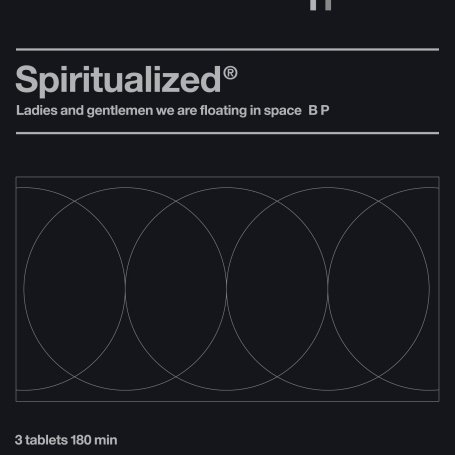
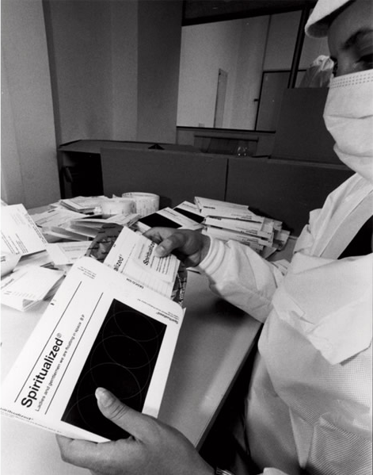
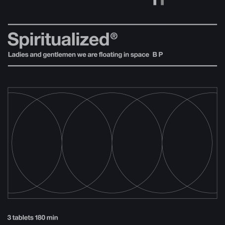
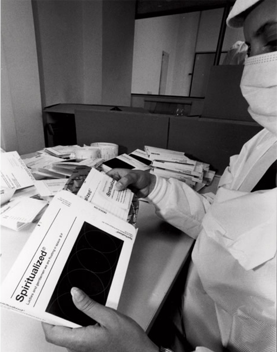

Spiritualized Ladies and Gentlemen... Music packaging The pill style trays for the album 'Ladies and Gentlemen We Are Floating in Space' were packed under strict pharmaceutical manufacturing conditions. Each blister contained a 3 inch CD featuring one of twelve tracks which had to be popped through foil in order to be played. All credits were printed onto a medicine information sheet and contained warnings on the possible side effects of listening to the band. The album was later reissued, and a new limited edition black version produced.
[designed by Farrow Design]